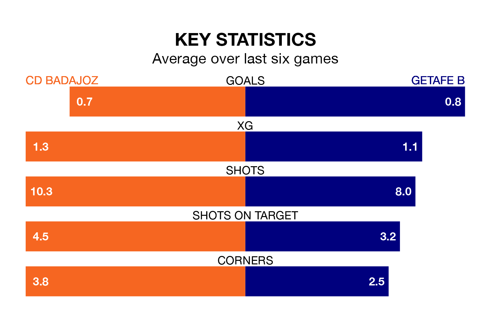

CD Badajoz host Getafe B on Sunday in the Segunda División RFEF Group 5.
In their last league match, on March 23, Badajoz drew with CP Cacereño 1-1 away, with their goal scored by Borja López i Hinojosa.
Getafe B won, 4-1 at home against CF Villanovense on March 24, with Gonzalo Calçada de Sa Sanchidrián (two), Alejandro Claverías Gutiérrez and Santiago Garcia Gonzalez on the scoresheet.
Badajoz are 16th in the table after 28 games, of which they have won six and drawn 12, earning 30 points.
Getafe B are 11 places ahead of the home side in fifth, with 11 wins and 10 draws putting them on 43 points.
With 24 goals in 28 games so far this season, Badajoz are scoring at below the league average rate with 0.9 goals per game. But they are conceding fewer than average too, letting in 29 goals at a rate of 1.0 per game.
The visitors are also below average scorers, with 1.0 goal per game, compared to a league average of 1.1. They have also conceded 1.0 goal per game.
Badajoz are in mixed form in the Segunda División RFEF Group 5, with two wins and three draws from their last six games.
And also with two wins and three draws over that period, Getafe B's form is identical – they have both taken nine points from 18.
Updated: 12:16 (UTC), 25/03/24